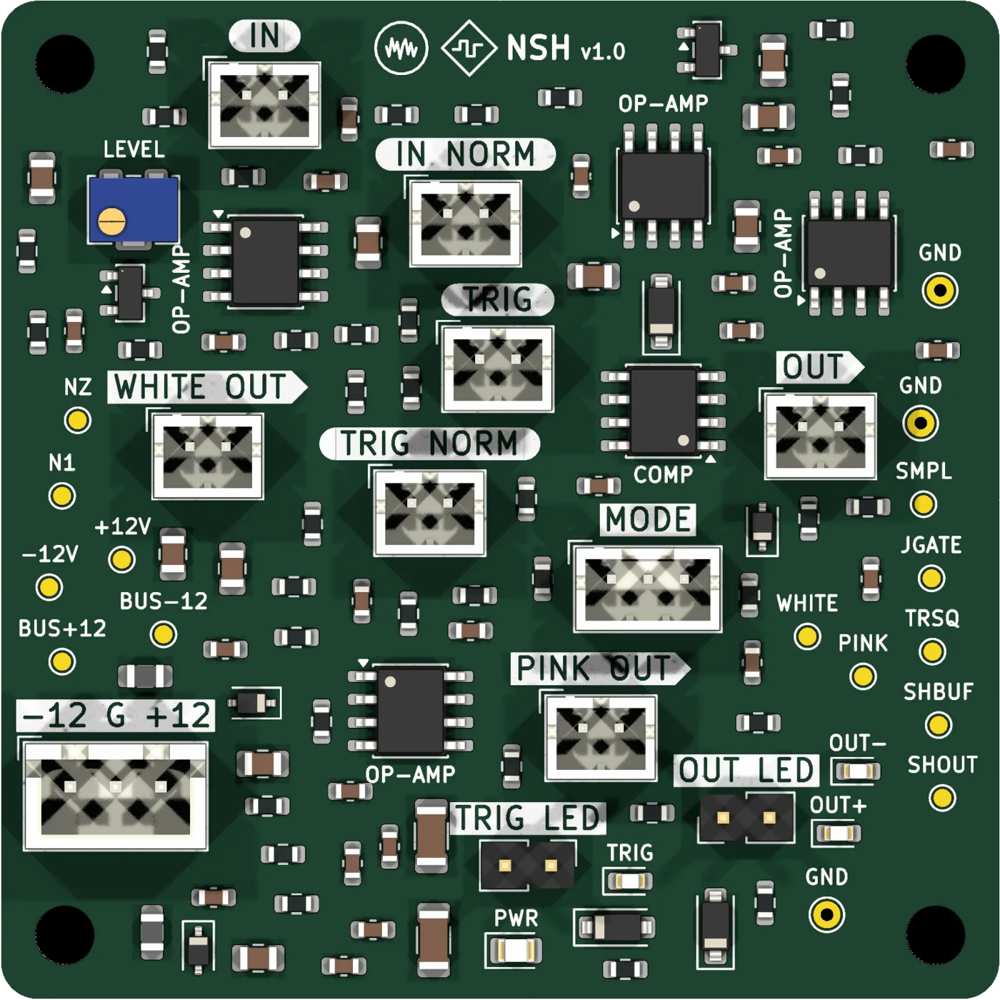
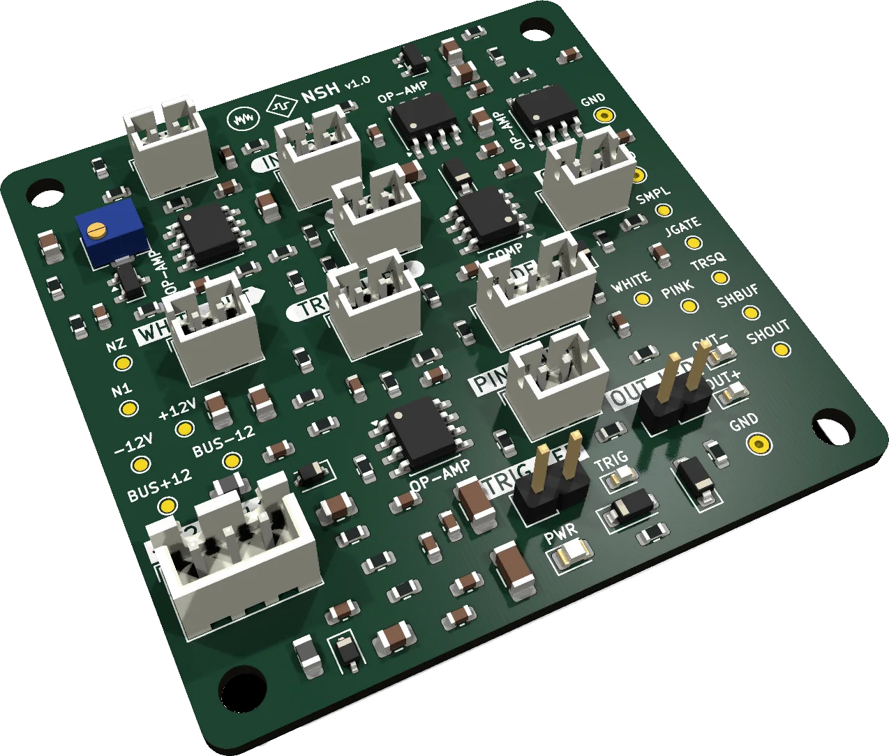
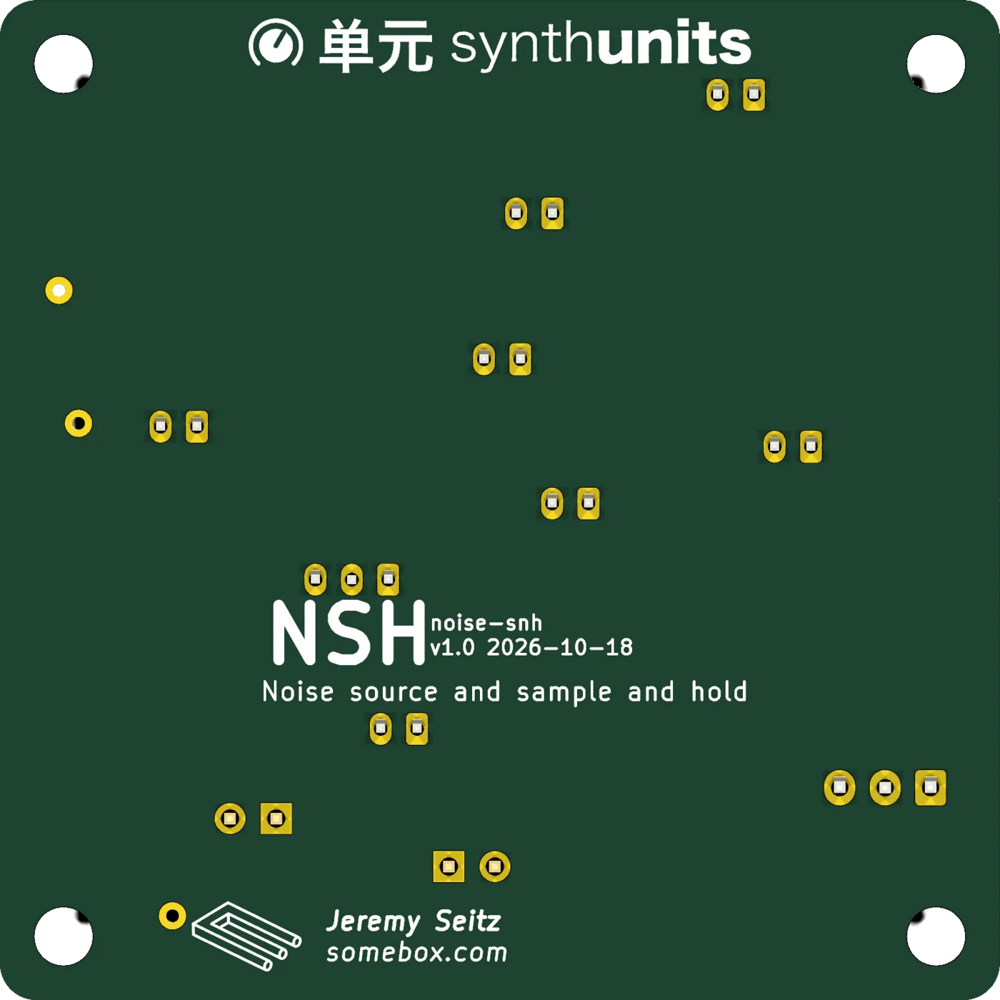
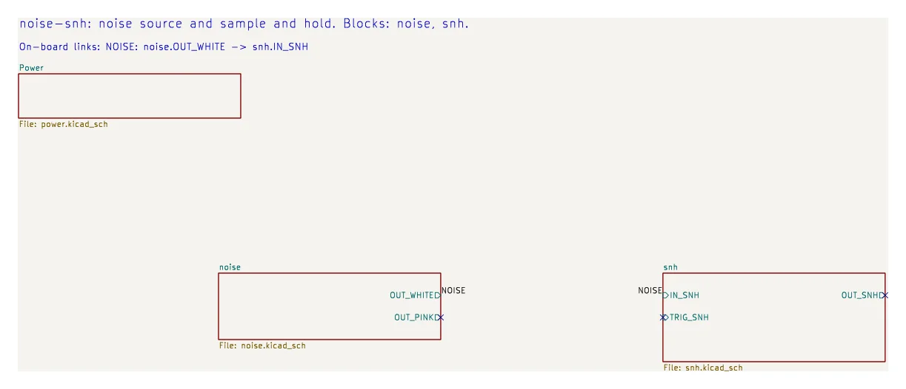
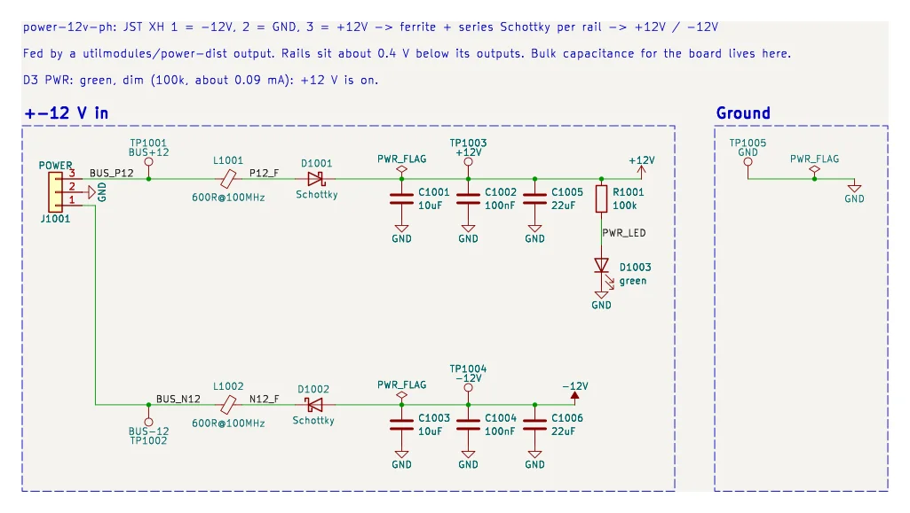
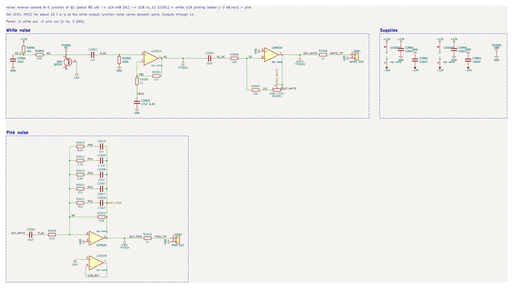
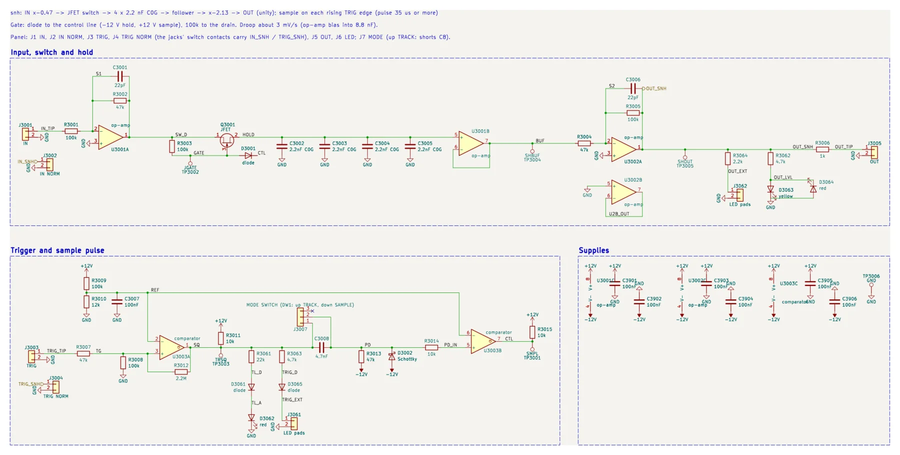

Noise source and sample and hold
White and pink noise and a sample and hold on one board, the S&H's input normalled to the noise.
Two circuits on one 55 × 55 mm board: a noise source and a sample and hold, with the S&H's input normalled to the white noise, so a clock into TRIG gives random stepped voltages with nothing else patched.
The noise comes from a reverse-biased transistor junction, amplified by a dual op-amp; a trimmer sets the level, and an RC ladder turns white into pink at −3 dB per octave. The sample and hold scales its input down, switches it onto a hold capacitor through a JFET and buffers it back to unity. A comparator turns each rising edge at TRIG into a short sample pulse.
A MODE switch makes it a track and hold: the output follows the input while TRIG is high and holds when it falls, for stepped-then-gliding CVs or a frozen grain of audio.
- Status
- In design: parts placed, not routed yet
- Board
- 55 × 55 mm, 2 layers
- Progress
- follow its tracking issue



Block diagram
Drawn by the site's generator from the board's own data: its blocks, its connectors and the links between them. The pots and switches are listed in the block they set.
What it does
- WHITE OUT: about 1.3 V rms, peaks near ±6 V, set by a LEVEL trimmer (simulated with an assumed junction noise, which varies between parts).
- PINK OUT: about 1.2 V rms; the pinking ladder within ±0.75 dB of −3 dB per octave from 20 Hz to 20 kHz (simulated).
- S&H IN: 100 kΩ, ±10 V; normalled to the white noise.
- TRIG: high above about 2.2 V, low again under 1.7 V, so 3.3 V logic works; samples on each rising edge.
- S&H OUT: unity, through 1 kΩ; the held value within 14 to 21 mV of the input (simulated); expected droop about 3 mV/s.
- MODE: SAMPLE or TRACK.
- Power: about 12 to 15 mA on each rail, estimated from the circuit.
- Board: 55 × 55 mm, 2 layers, four M3 holes.
Connections
| Connector | Wire to | Housing | Pins |
|---|---|---|---|
| POWER (1 -12V, 2 GND, 3 +12V) | a the power board output (straight-through JST XH lead) | JST XH, 3 pins, top entry | 1 −12 V, 2 GND, 3 +12 V |
| WHITE OUT | a jack (Thonkiconn) | JST PH, 2 pins, top entry | 1 tip, 2 GND |
| PINK OUT | a jack (Thonkiconn) | JST PH, 2 pins, top entry | 1 tip, 2 GND |
| IN | a jack (Thonkiconn) | JST PH, 2 pins, top entry | 1 tip, 2 GND |
| IN NORM | panel-jack J2 (the jack's switch contact) | JST PH, 2 pins, top entry | 1 normal, 2 GND |
| TRIG | a jack (Thonkiconn) | JST PH, 2 pins, top entry | 1 tip, 2 GND |
| TRIG NORM | panel-jack J2 (the jack's switch contact) | JST PH, 2 pins, top entry | 1 normal, 2 GND |
| OUT | a jack (Thonkiconn) | JST PH, 2 pins, top entry | 1 tip, 2 GND |
| MODE SWITCH (DW1: up TRACK, down SAMPLE) | a toggle switch | JST PH, 3 pins, top entry | 1 A, 2 common, 3 B |
Every panel control has its own connector with a fixed pinout, so any lead of the right size fits any module. Pin 1 is the square pad.
LEDs
On the board: PWR (green), TRIG (red), OUT+ (yellow), OUT- (red). Pads for a panel LED: TRIG LED, OUT LED.
Wiring and setup
- Power: a 3-pin JST XH lead (1 −12 V, 2 GND, 3 +12 V) from one of the power hub's outputs, with a ferrite and a series Schottky on each rail. Check each lead with a meter first.
- Panel: 5 jacks (WHITE OUT, PINK OUT, IN, TRIG, OUT) and an on-on toggle (MODE: up TRACK, down SAMPLE), each on its own top-entry JST PH connector.
- The normal: wire the IN jack's switch contact (the jack breakout's second connector) to IN NORM, and the white noise reaches the S&H while nothing is patched into IN. TRIG NORM has no source on this board.
- LED pads, each with its own resistor: TRIG LED (lit while TRIG is high) and OUT LED (the held level in both polarities: a two-lead bicolour LED, or two LEDs back to back).
- No LINK connector.
- Set the noise LEVEL trimmer by ear or with a meter, to about 1.3 V rms; higher settings clip at the rails.
Limits and open questions
- A placement mockup: the parts are placed, the board isn't routed. Not built.
- The noise level depends on the transistor: junction noise varies from part to part, so the junction's bias resistor is chosen on test, and the first stage's gain may need changing (its test pad shows clipping or too little level).
- The JFET varies too. The sample pulse was lengthened so a full-scale step settles within 22 mV at every JFET corner I simulated, with the trigger LEDs loading it.
- Droop is untested; the simulation models no leakage. Measure it at the SHBUF pad, not at the hold capacitor, which a 10 MΩ probe would drain.
- TRIG needs a patched clock or gate. The random CV board has one built in.
Development notes
- The JFET sample and hold with a diode-driven gate is the classic of Thomas Henry's and Ray Wilson's designs; the noise source is the usual reverse-biased junction, as in Ray Wilson's MFOS noise card. Both drawn from scratch; the pinking ladder's values were fitted by least squares to parts in stock.
- A review found the noise's first stage clipping and two high-pass filters cutting the bass, and the S&H's sample pulse shrinking under the trigger LEDs' load. Both were fixed before this board was placed.
- The track-and-hold switch came later, as one of the options for the voice.
- Next: route it once the first boards are built and proven.
Schematic
The schematic as drawn, with each chip named by its function rather than its part number. The design isn't open source yet, so there are no files to download.








Would you use a NSH? A thumbs-up on its tracking issue is how I count interest, and you can subscribe there to follow its bring-up. Questions and ideas go to the discussions.